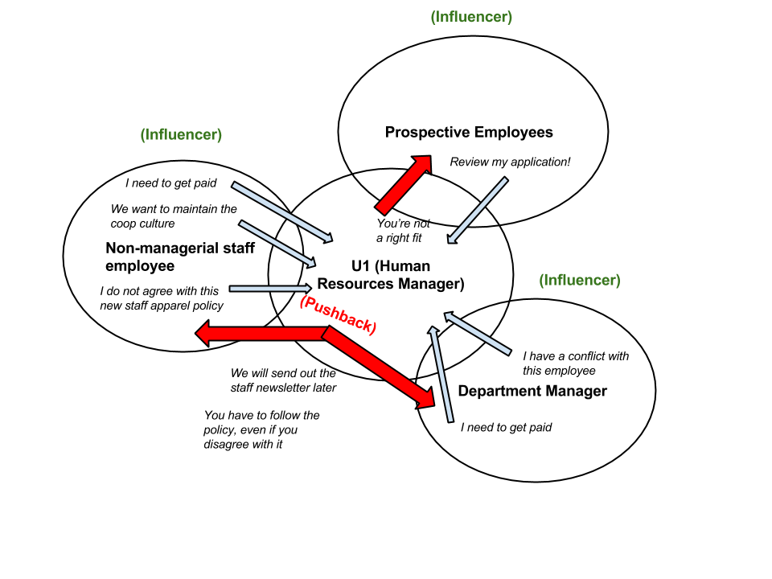
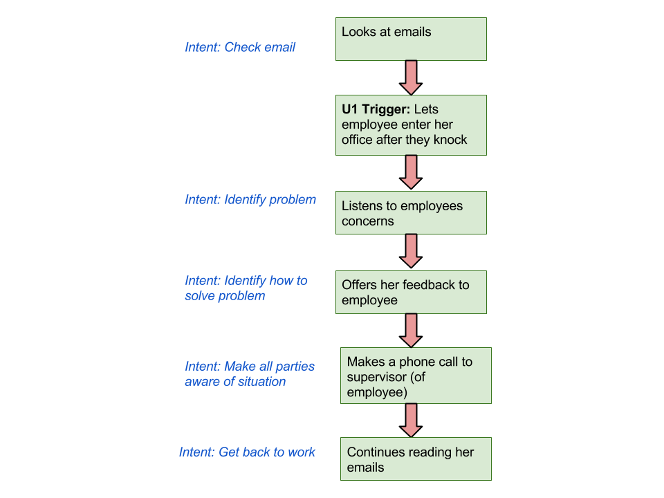
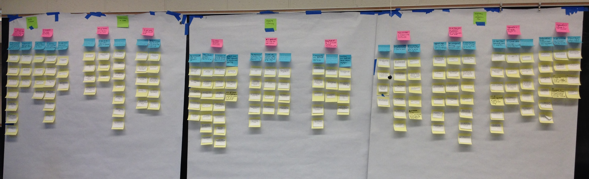

Peoples' Food Coop
Using contextual inquiry interviews, I worked with 4 other students on assisting The People's Food Coop's information flow & communication issues.
Background
The People’s Food Coop is a local food cooperative whose purpose is to provide and sell natural and healthy food to the community, food that has been primarily cooperatively produced, minimally packaged, and with the least processing. I worked with 3 other UMSI students to work on this semester-long project that sought to improve the The People's Food Coop's information flow & communication issues, primarily using interviews and affinity mapping as tools. This project was done in the Contextual Inquiry & User Needs Assessment course at UMSI.
Role
I was the contact person for the client, conducted interviews, and particpated in the affinity wall mapping portion of this project.
Duration
5 months (Jan ‘15 - Apr ‘15)
Methods & Tools
Camtasia, Qualtrics, Usability Testing, Survey Design, Persona Development, Heuristic Evaluation, Interviewing
Team Members
Kristyn Sonnenberg, Izhar Buendia, Noureen Dharani, Bwhana Mishra
Interviews
We conducted 5 interviews at the People's Food Coop, with 3 managerial employees and 2 non-managerial employees. I specifically interviewed one person and took notes for another interview. Before we started interview, we developed a set of Interview Protocols, which included the actual interview questions and the pre-interview script. We all collaborated on crafting the questions and tailored each set of questions to each of the interviewees.
In addition to the interviews, we also took pictures of the work place, in order to get an idea of what the environment looks like and how the environment could possibly affect the work flow and communication procedures of the store. See image below.
Work Models
Each of the team members created work models that we felt best represented a key aspect of an individual’s work. I specifically made a cultural model, which illustrated how culture influenced the work practice of one of the employees. I also made a sequence model, which illustrated the sequence of events that one of the employees had to undergo with another employee regarding a communication conflict.
 Affinity Wall
Over the course of two weeks, and many countless hours, our team created an affinity wall, comprised from the data we had collected from our interviews a couple of weeks beforehand. One of the major findings (out of 5) we derived from the affinity wall was the fact that each department often had a different communication method and that employees were starting to feel a change in the work culture to a more corporate feel. Below is a photo of the completed affinity wall:
Final Takeaways
With the affinity wall mapping done, we were able to put together a report for our client that detailed the findings we gathered from the interviews and subsequent affinity mapping, along with recommendations for each finding. Some of the recommendations revolved around having more transparency regarding managerial decisions, ensuring the work culture remains cooperative in nature, and standardizing means of communications among departments.
Takeways: Overall, this was a great project I worked on, where I enjoyed working with a diverse group of people and learned more about this user-centered design process of contextual inquiry.